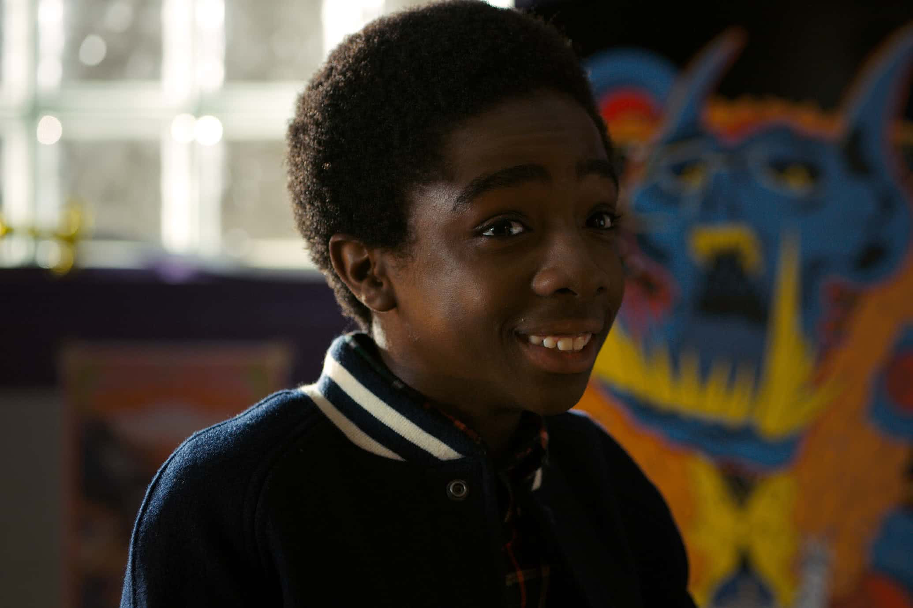

PERSONAGENS DA PRIMEIRA TEMPORADA:
Eleven
Protagonista - Menina foragida do laboratório de Hawkins.
Will
Personagem principal - Garoto que desaparece misteriosamente.
Joyce
Mãe do Will.
Jonathan
Irmão do Will.
Lucas
Amigo do Will.
Mike

Melhor amigo do Will.
Dustin
Amigo do Will.
Nancy
Irmã do Mike.
Demogorgon

Vilão da primeira temporada.
Estes são os principais personagens da série durante a primeira temporada!
Desenvolvido por Carolina Prado - 2023